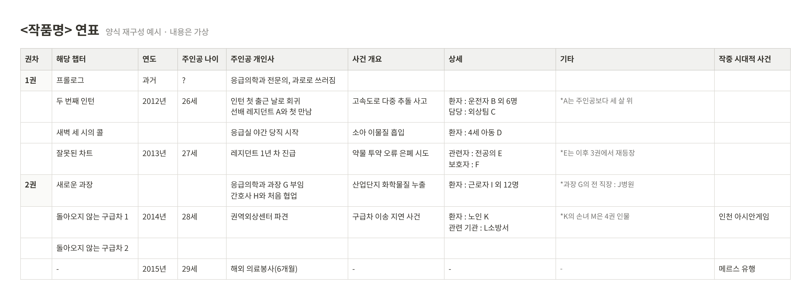

05 콘텐츠 편집 운영 실무
경력 · 로크미디어 판무편집팀 과장
로크미디어에서 웹소설 편집자로 근무하며 편집, 작가 소통, 연재 마감, 전자책·종이책 출간과 프로모션 일정 조율을 담당했습니다. 콘텐츠의 이해도와 운영의 안정성을 함께 관리한 경험을 바탕으로, 현재는 콘텐츠를 발견하고 경험하는 서비스를 기획하고 있습니다.
회사
로크미디어 · 판무편집팀 과장
기간
2014.09 – 2024.12 · 10년 4개월
담당
편집 · 검수 · 연재 마감 · 출간·프로모션 일정 관리
01 · CAREER
10년 4개월
로크미디어 판무편집팀 과장
82종
웹소설 편집 · 전자책(EPUB) 1,009권 · 종이책 36종 593권
로크미디어 · 2014.09 – 2024.12 · 웹소설 편집 및 운영
연재·유통: 네이버 시리즈 · 카카오페이지 · 문피아 · 조아라 · 리디 · 북팔 등
2차 콘텐츠화: 원작 편집 담당작 중 웹툰화 12종 · 드라마화 3종
02 · CASE
4,743화 · 195권
『이것이 법이다』 완결
월 약 50화씩 빠르게 이어지는 연재에서는 사건과 인물이 쌓일수록 설정이 어긋나기 쉽습니다. 다른 작품과 같은 방식으로 관리하면 연재가 길어질수록 큰 설정 충돌이 생길 것이라고 판단했습니다.
그래서 챕터마다 작중 연도, 주인공의 나이와 개인사, 사건과 관련 인물을 기록하는 연표를 만들어 관리했습니다. 이 연표는 완결까지 설정을 확인하는 기준이 되었고 작가와 기획팀, 웹툰팀이 함께 쓰는 자료가 되었습니다.

| 항목 | 내용 |
|---|---|
| 담당 기간 | 약 10년 · 월 약 50화 연재 |
| 연표 규모 | 1–195권 · 1,624챕터 · 작중 사건·주요 전개 약 500건 |
| 운영 결과 | 마감 누락 0회 |
대표 담당작: 『이것이 법이다』 · 『다시 한번 아이돌』 · 『역대급 창기사의 회귀』 외
03 · SKILLS
| 역량 | 실제 수행 경험 | 현재 프로젝트와의 연결 |
|---|---|---|
| 콘텐츠 이해와 정보 정리 | 고증, 전문용어 통일, 문장 편집, 설정집·연표 작성, 종이책 뒤표지 소개 문안 36종 작성 | 지표와 데이터의 의미를 이해하기 쉽게 설명 |
| 지속적인 운영 | 연재 마감, 출간과 프로모션 일정 조율, 오류 대응 | 제작 이후의 발행·점검·개선까지 고려 |
| 협업과 피드백 | 작가별 맞춤 피드백, 타 부서 요청 조율, 독자 문의 대응 | 문제를 구체적으로 전달하고 수정 결과 확인 |
04 · EDUCATION
학력
한양대학교 ERICA
인문학부
국어국문학 전공 졸업
자격
전자출판기능사
컴퓨터활용능력 2급
인증·교육
AX 융합 데이터 분석 전문가 양성 과정 수료
Google Analytics Certification (2026)
Google AI Essentials
디지털 퍼블리싱 과정
이수열의 교정교열 실무
한겨레출판편집자 입문 33기